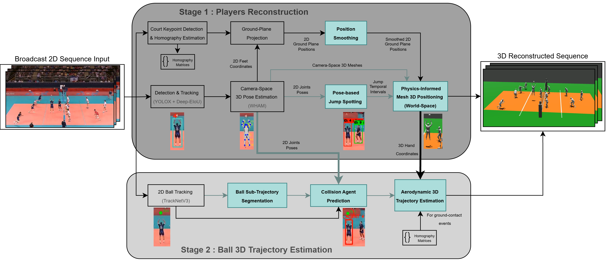

Full Monocular 3D Reconstruction: Lifting an uncalibrated 2D broadcast rally into view-free 3D space.
3D reconstruction from single-view broadcast sports is a pivotal capability for automated analytics and immersive AR/VR replays, yet notoriously ill-posed due to difficult-to-calibrate moving cameras and severe depth ambiguity. Unlike widely studied racket sports, team sports such as volleyball feature unpredictable multi-contact sequences and high-altitude jumps that invalidate standard planar ground assumptions.
To resolve these limitations without 3D training supervision, we propose a complete, physics-grounded pipeline tailored to monocular broadcast volleyball. First, we correct perspective drift induced by ground-plane projection by coupling temporal jump spotting with ballistic interpolation for accurate 3D player placement. Second, for 3D ball trajectory estimation, we design a dedicated sub-trajectory segmentation architecture alongside a collision-matching algorithm. By anchoring physical equations directly to reconstructed 3D hand vertices, we lift noisy 2D detections into a spatiotemporally coherent 3D scene.

Our pipeline is decoupled into two interconnected stages:
End-to-end reconstructions on broadcast sequences, visualizing synchronized 3D player meshes in global court coordinates alongside aerodynamic ball trajectories.
Quantitative comparisons on the calibrated multi-camera VolliQ benchmark, contrasting our player-anchored aerodynamic solver against volleyball-adapted 2D-reprojection baselines (MonoTrack) and pure ballistics.
@article{boussouf2026volley3d,
title = {Volley3D: Unified 3D Full-Sequence Reconstruction from Monocular Broadcasts},
author = {Boussouf, No{\^a}m and Maglo, Adrien and Chaouch, Mohamed and Saito, Hideo},
journal = {arXiv preprint},
year = {2026}
}